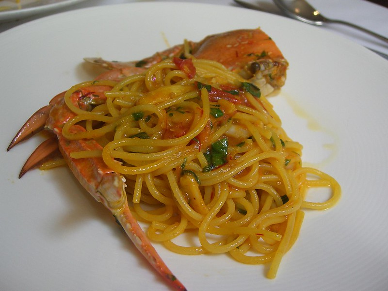

Chilli Sand Crab Pasta
Home

Photo by Alpha, under CC BY-SA
Description
Perfect combination of sand crab and chilli butter, mixed through spaghetti or linguine.
Ingredients:
- 3tbsp olive oil
- 20g unsalted butter
- Half small bunch chopped parsley
- Grated zest and juice of 1 lemon
- 200g spaghetti or linguine
- 100g raw sand crab meat
- 1 small clove crushed garlic
- Half teaspoon chilli flakes
Steps:
- Heat 1 tbsp olive oil in a pan. Mix the garlic in and cook for one minute, then add the
parsley. Set aside and wipe down the pan.
- Cook the pasta in a pot of water and heat the remaining oil and butter in the pan.
Using low-medium heat, add the shallotts and a pinch of salt. Cook for 7 minutes.
Stir in the chilli, sand crab, lemon zest, and juice. Continue until cooked through.
- Add the pasta to the pan along with a small amount of the cooking water.
Stir until thoroughly mixed. Season, and top with parsley and lemon juice.